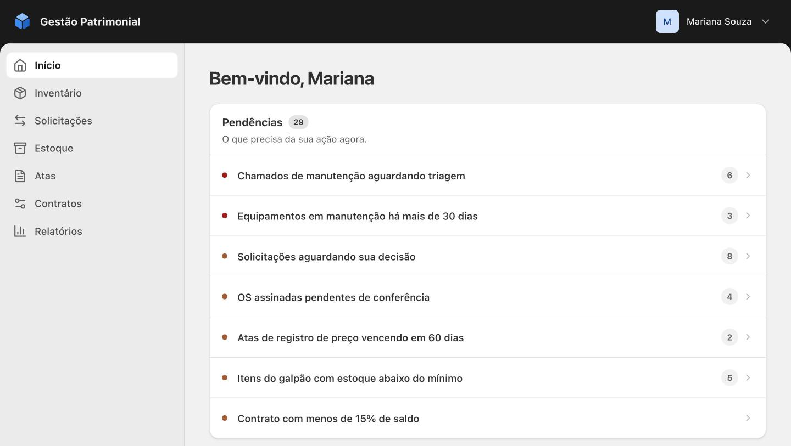

INTRODUÇÃO
Problema. A Secretaria Municipal da Saúde controlava equipamentos patrimoniais em planilhas e sistemas desconectados. Sem um histórico único, ficava difícil saber onde cada item está, quem o consertou e quanto da ata ou do contrato já foi gasto.
Por que importa. É um domínio administrativo e auditável: erro de dado vira erro de prestação de contas.
Objetivo e solução. Um sistema web que centraliza, num só lugar, o ciclo de vida do equipamento:
- inventário com tombamento único;
- manutenção (de equipamento e civil);
- solicitações, estoque de galpões, atas e contratos;
- relatórios, conversa e auditoria.
DESENVOLVIMENTO
Tecnologias.
- Frontend: React 18, Vite e TypeScript;
- Backend: Node.js, Express, TypeScript e Prisma;
- Banco: PostgreSQL;
- Login: Keycloak da Prefeitura (OIDC com PKCE);
- Infra: Docker Compose, GitHub Actions, Prometheus e Grafana.
Regras de negócio protegidas no código:
- tombamento único e imutável;
- estoque e saldo de ata nunca ficam negativos, nem com acessos simultâneos (atualização condicional no banco);
- mudanças dependentes acontecem na mesma transação;
- ações críticas gravam auditoria;
- retorno de manutenção exige confirmação da Unidade e de um fiscal.
A Figura 1 mostra como as peças se conectam; a Figura 3, mais adiante, mostra o caminho de um chamado de manutenção.
CONCLUSÕES
O objetivo foi tirar o patrimônio das planilhas e dar a cada equipamento um histórico confiável. O SGP cobre o ciclo completo, do cadastro à baixa, com regras que o próprio sistema impõe.
Aprendizados principais: proteger regras de negócio no banco e em transações, não só na tela; tratar permissão como regra do servidor; e documentar decisões junto ao código.
RESULTADOS
Módulos entregues: inventário, manutenção, solicitações, estoque de galpões, atas, contratos, relatórios e conversa. O acesso é decidido no servidor, por perfil e por permissões próprias de cada operador.
A tela inicial (Figura 2) reúne o que precisa de ação de quem entrou: chamados para triagem, equipamentos parados há mais de 30 dias, atas vencendo e estoque baixo.

Qualidade e segurança.
- cobertura de testes: 90,8% no backend e 87,5% no frontend (o CI exige no mínimo 75% e 25%);
- CI/CD no GitHub Actions: lint, build, testes e deploy;
- perfil externo (terceirizada) com lista de permissão, negado por padrão;
- sessão própria por JWT; o sistema não guarda senhas;
- anexos só abrem para quem tem direito;
- ambiente de demonstração publicado em servidor próprio.
Aponte a câmera para abrir a aplicação (Figura 4).
REFERÊNCIAS
HARDT, D. (ed.). The OAuth 2.0 Authorization Framework. RFC 6749, IETF, 2012.
SAKIMURA, N.; BRADLEY, J.; AGARWAL, N. Proof Key for Code Exchange by OAuth Public Clients. RFC 7636, IETF, 2015.
JONES, M.; BRADLEY, J.; SAKIMURA, N. JSON Web Token (JWT). RFC 7519, IETF, 2015.
PRISMA. Prisma ORM Documentation. Disponível em: prisma.io/docs. Acesso em: 14 nov. 2026.
POSTGRESQL GLOBAL DEVELOPMENT GROUP. PostgreSQL Documentation. Disponível em: postgresql.org/docs. Acesso em: 14 nov. 2026.